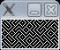

I decided I’d learn a bit more on how emulators work, and what better way to do so than to write one.
So I wrote a CHIP8 Emulator, it took about 3 evenings of coding to get it all working 100%, I had a few mix ups along the way but in the end I managed to get all of the standard CHIP8 games working, with blinky being the last and maze being the first.
If you are planning to make your own chip8 emulator I recommend you read the documentation included with David Winters CHIP8 Emulator: http://www.pong-story.com/chip8/
The first game you are likely to get running correctly is maze, it definitely requires the least working opcodes.
I’ve used SDL to implement my emulator, it provides easy to use framebuffer access and input.
And lets round off with a pic:

Oh yeah, if anyone wants the code I could upload it, bit of a mess tho 🙂
Hello, would you care to release the afkim2 source code? We want to translate it to portuguese brazilian if possible.
Also, I am not familiar with the compile tools you are using, I am in a windows box, but I also have a linux box if necessary.
Thanks dude.
The AFKIM source code is available in the pspradio SVN:
http://sourceforge.net/svn/?group_id=166538
However only the local text and images on the menus can be translated.
Most of the messages in the server window are from bitlbee, which provides the connection to msn/icq/gtalk etc.
Bitlbee currently does not have support for multiple languages, however there is a bug about it here:
http://bugs.bitlbee.org/bitlbee/ticket/121
Perhaps if you can assist with it then multiple language support can be added.
man, i looking for afkim’s traslation but i cant encounter the source code in this link http://sourceforge.net/svn/?group_id=166538
u say ” The AFKIM source code is available in the pspradio SVN:” but the link to pspradio svn is off
any idea?
thanks again
Visit that page in your web browser and it tells you exactly how to browse online or checkout a copy of the svn.
There is no translated version in there at this stage however.
Inside the SVN repository AFKIM is in: trunk/PSP/Plugins/APP_afkim/
Hi!
I’m very interesting to read and play with it!!! can you upload the code, please?
Very thanks!
Xavier
I’ll have a look for it tonight and upload it if I can find it 🙂
Bah sorry man, can’t find it.
I must of deleted it 🙁
Might recode it over the holidays for something to do 😉
Ups!!
I’m working in an ruby version 🙂 and I would like to see another chip-8 emulators 😀
If you recode it, I’ll be grateful!
Regards,
Xavier
Please, send me an email if you found the old code or id you recode it 🙂
Xavier